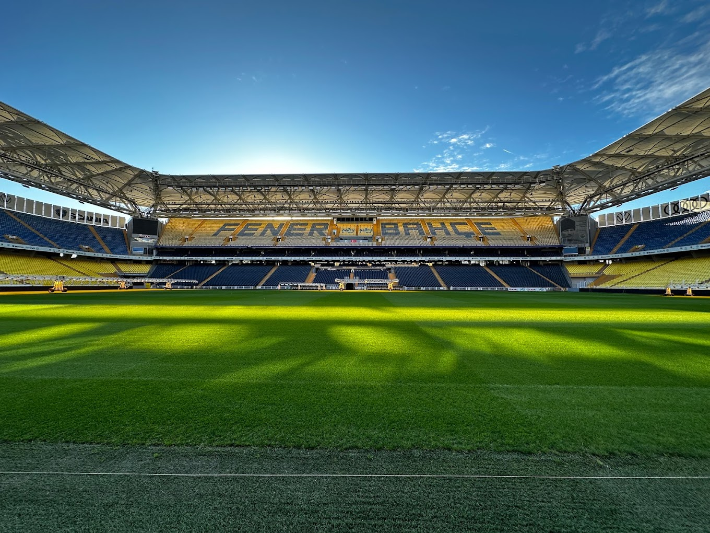

Fenerbahçe'nin Tarihi
Fenerbahçe, 1907 yılında kuruldu ve Türk futbolunun öncülerinden biri olarak kabul edilmektedir. Kulüp, Türkiye'nin en büyük spor kulüplerinden biridir ve birçok ulusal ve uluslararası başarıya imza atmıştır.
Kulüp, Kadıköy'de bulunan Fenerbahçe Stadyumu'nda maçlarını oynamaktadır. Stadyum, Türk futbolunun önemli yapılarından biri olarak kabul edilir.